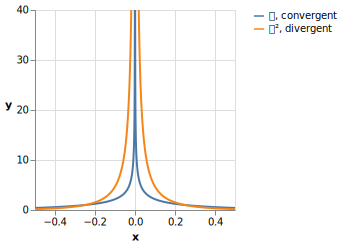
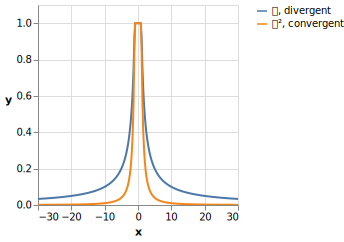

1. Hilbert Space
1.1. Questions
-
.. [This problem is Griffiths 3.1 but is too simple to be his I.P.] Formally, a vector space is a set \(S\) closed under linear combinations: if for all \(\vec u,\vec v\in S\) and for all \(a,b\in\mathbb C\), \(a\vec u+b\vec v\) is also in \(V\), then \(S\) is a vector space. Show that the set of square-integrable functions does indeed form a vector space.
-
.. [Griffiths 3.2; same caveat as above] A vector space \(S\) is said to have an inner product \(\Braket{\cdot|\cdot}\) when, for all \(u,v,w\in S\) and \(a,b\in\mathbb C\), the following properties hold:
-
Conjugate symmetry: \(\Braket{v|u}=\Braket{u|v}^*\)
-
Nonnegativity: \(\Braket{u|u}\ge 0\) (in particular, it’s real), and \(\Braket{u|u}=0\) if and only if \(\Ket{u}=\Ket 0\)
-
Linearity: \(\Braket{u|(av+bw)}=a\Braket{u|v} + b\Braket{u|w}\)
In addition, we define the norm of a vector, corresponding to the length of a vector in \(\mathbb R^n\), to be \(\|v\|=\sqrt{\Braket{v|v}}\) (or \(\|v\|^2=\Braket{v|v}\)).
Show that the inner product below, defined on the set of square-integrable functions over domain \((a,b)\), satisfies these properties. \[\begin{align*} \Braket{f|g}:=\int_a^b f^*(x)g(x)\,dx \end{align*}\] -
-
.. A function \(f\) is said to be absolutely integrable when \(|f|\) is integrable.
-
Find a continuous real-valued function on \((0,\infty)\) that is absolutely integrable, but not square-integrable.
-
Find a continuous real-valued function on \((0,\infty)\) that is square-integrable, but not absolutely integrable.
Solution
The “trick” is find functions that approach the \(x\)- or \(y\)-axis quickly enough to have a finite integral, but no longer do so when squared (part (a)) or square-rooted (part (b)).
-
One example is the following function: \[\begin{align*} f(x)=\begin{cases} x^{-\frac{1}{2}}-1&x\le1\\ 0&x\ge 1 \end{cases} \end{align*} \]
This is because \(\int_0^1 x^n\,dx\) is finite if and only if \(n > -1\). So \(x^{-\frac{1}{2}}\) is integrable, but its square, \(x^{-1}\), is not.
-
One example is the following function: \[\begin{align*} f(x)=\frac{1}{x+1} \end{align*} \]
This is because \(\int_1^\infty x^n\,dx\) is finite if and only if \(n<-1\). So \(x^{-1}\) is not integrable, but its square, \(x^{-2}\), is.
-
-
.. Show that the commutator is linear in its first argument: \([aA+bB,C]=a[A,C]+b[B,C]\). (It is also linear in its second argument; the proof is practically identical.)
Solution
Operators don’t necessarily commute, but scalars do. So, \[\begin{align*} [aA+bB,C]&=(aA+bB)C - C(aA+bB)\\ &=aAC-aCA+bBC-bCB\\ &=a(AC-CA)+b(BC-CB)\\ &=a[A,C]+b[B,C] \end{align*}\] as desired.
-
.. Let’s prove the Cauchy-Schwarz Inequality: \(\left|\Braket{x|y}\right|^2\le \Braket{x|x}\Braket{y|y}\), or equivalently \(\left|\Braket{x|y}\right|\le \|x\|\|y\|\) (“the magnitude of the inner product is at most the product of the norms.”). This inequality is pivotal in quantum mechanics because it is the basis of the uncertainty principle for all incompatible pairs of observables (i.e., hermitian operators with a nonzero commutator).
-
First, prove the Pythagorean Theorem for vectors: If \(x\) and \(y\) are orthogonal, then \(\|x+y\|^2=\|x\|^2+\|y\|^2\).
-
Use this to prove the Cauchy-Schwarz Inequality. (Hint: let \(z=x-\frac{\Braket{y|x}}{\Braket{y|y}}y\).)
-
For which pairs of vectors \(x,y\) is the quantity on the left hand side maximized, i.e., when is the inequality an equality?
Solution
-
Since \(x\) and \(y\) are orthogonal, \(\Braket{x|y}=\Braket{y|x}=0\). Now we simply apply the linearity of the inner product: \[\begin{align*} \|x+y\|^2&=\Braket{x+y|x+y}\\ &=\Braket{x|x}+\Braket{x|y} +\Braket{y|x} +\Braket{y|y}\\ &=\Braket{x|x}+\Braket{y|y}\\ &=\|x\|^2+\|y\|^2 \end{align*}\]
-
First, if \(y=\Ket{0}\), this is trivial; both sides of the inequality are 0. So assume \(y\ne\Ket{0}\), from which it follows that \(\Braket{y|y}\ne 0\). As the hint suggests, let \(z=x-\frac{\Braket{y|x}}{\Braket{y|y}}y\). This reason for this choice of \(z\) will soon be clear: \[\begin{align*} \Braket{y|z}&=\Braket{y|x-\frac{\Braket{y|x}}{\Braket{y|y}}y}\\ &=\Braket{y|x}-\frac{\Braket{y|x}}{\Braket{y|y}}\Braket{y|y}\\ &=\Braket{y|x}-\Braket{y|x}\\ &=0 \end{align*}\] So \(y\) and \(z\) are orthogonal. (In fact, \(\frac{\Braket{y|x}}{\Braket{y|y}}y\) is the projection of \(x\) onto \(y\), which when subtracted from \(x\) leaves the portion of \(x\) orthogonal to \(y\).) Now, \(x=z+\frac{\Braket{y|x}}{\Braket{y|y}}y\), the sum of two orthogonal vectors. And, of course, \(\|z\|\ge 0\). So, applying the Pythagorean Theorem, we have \[\begin{align*} \|x\|^2&=\|z\|^2+\left\|\frac{\Braket{y|x}}{\Braket{y|y}}y\right\|^2\\ &=\|z\|^2+\left|\frac{\Braket{y|x}}{\|y\|^2}\right|^2\|y\|^2\\ &=\|z\|^2+\frac{\left|\Braket{y|x}\right|^2}{\|y\|^2}\\ &\ge \frac{\left|\Braket{y|x}\right|^2}{\|y\|^2} \end{align*}\] Therefore, \[\begin{align*} \left|\Braket{x|y}\right|^2\le \|x\|^2\|y\|^2=\Braket{x|x}\Braket{y|y} \end{align*}\] as desired.
Let’s think about what this actually means, using the following form of the statement: \(\|x\|\ge \frac{|\Braket{y|x}|}{\|y\|}\). If we define \(y'=\frac{y}{\|y\|}\) to be \(y\) normalized, and define \(P_{y'}=\Ket{y'}\Bra{y'}\) to be the projection operator onto \(y'\), then \[\begin{align*} \Bigl\|P_{y'}\Ket{x}\Bigr\|&=\Bigl\|\Ket{y'}\Braket{y'|x}\Bigr\|\\ &=\left|\Braket{y'|x}\right|\ \Bigl\|\Ket{y'}\Bigr\|\\ &=\frac{\left|\Braket{y|x}\right|}{\|y\|}\cdot 1\\ &=\frac{\left|\Braket{y|x}\right|}{\|y\|} \end{align*}\] So all the Cauchy-Schwarz Inequality says is that \(\left\|P_{y'}\Ket{x}\right\|\le\left\|x\right\|\), i.e. the norm of the projection of a vector \(x\) onto some other vector cannot exceed the norm of \(x\) itself, which on its face is obvious (how could a vector get longer by taking only a portion of it?).
-
For this inequality to be an equality, we need \(\|z\|^2=0\), which implies \(x=\frac{\Braket{y|x}}{\Braket{y|y}}y\). So \(x\) must be a scalar multiple of \(y\) (which, in the finite-dimensional case, would mean they’re parallel).
-
2. Observables
2.1. Questions
-
.. Show that if \(P=Q^\dagger Q\) for some operator \(Q\), then \(\Braket{f|Pf}\ge 0\) for all \(f\).
Solution
\[ \begin{align*} \Braket{f|Pf}&=\Braket{f|Q^\dagger Qf}\\ &=\Braket{Qf| Qf}\\ &=\|Qf\|^2\\ &\ge 0 \end{align*} \] as desired
-
.. Show that \(Q^{\dagger\dagger}=Q\) for any operator \(Q\). (In other words, show that the adjoint of the adjoint is the original operator.)
Solution
Simply by the definition of the adjoint and the fact that \(\Braket{g|f}=\Braket{f|g}^*\), we have, for all \(f\) and \(g\), \[ \begin{align*} \Braket{Q^{\dagger\dagger} f|g}&=\Braket{f|Q^\dagger g}\\ &=\Braket{Q^\dagger g|f}^*\\ &=\Braket{g|Qf}^*\\ &=\Braket{Qf|g}^{**}\\ &=\Braket{Qf|g} \end{align*} \]
Now, because the inner product is linear, \[ \begin{align*} 0&=\Braket{Q^{\dagger\dagger} f|g}-\Braket{Qf|g}\\ &=\Braket{Q^{\dagger\dagger} f-Qf|g}\\ &=\Braket{(Q^{\dagger\dagger} -Q)f|g} \end{align*} \]
In particular, taking \(g=(Q^{\dagger\dagger} -Q)f\), we have
\[ \begin{align*} 0&=\Braket{(Q^{\dagger\dagger} -Q)f|(Q^{\dagger\dagger} -Q)f}\\ &=\|(Q^{\dagger\dagger} -Q)f\|^2 \end{align*} \]
Hence \((Q^{\dagger\dagger} -Q)f=\Ket 0\). Since \(f\) was arbitrary, \(Q^{\dagger\dagger} -Q\) must be the zero operator, and so \(Q^{\dagger\dagger} =Q\).
3. Eigenfunctions of a Hermitian Operator
3.1. Questions
-
.. Find the eigenfunctions and eigenvalues of the position operator \(x\), defined by \(x(f)=xf\), and \(p\), defined by \(p(f)=-i\hbar \frac{\partial f}{\partial x}\).
-
.. Suppose \(f\) is an eigenfunction of \(A\) with eigenvalue \(\lambda\).
-
Must \(f\) also be an eigenfunction of \(A^\dagger\)? Either show that this is the case or find a counterexample.
-
When is \(\lambda^*\) an eigenvalue of \(A^\dagger\)?
Solution
-
No, \(f\) need not be an eigenfunction of \(A^\dagger\). For instance, if \(\displaystyle A=\begin{pmatrix}3&2\\0&1\end{pmatrix}\), then \[\begin{align*} A\begin{bmatrix}1\\0\end{bmatrix}=\begin{pmatrix}3&2\\0&1\end{pmatrix}\begin{bmatrix}1\\0\end{bmatrix}=\begin{bmatrix}3\\0\end{bmatrix}=3\begin{bmatrix}1\\0\end{bmatrix} \end{align*}\] yet \[\begin{align*} A^\dagger=\begin{pmatrix}3&0\\2&1\end{pmatrix}\\ A^\dagger\begin{bmatrix}1\\0\end{bmatrix}=\begin{bmatrix}3\\2\end{bmatrix} \end{align*}\] so while \(\begin{bmatrix}1\\0\end{bmatrix}\) is an eigenvector of \(A\), it is not an eigenvector of \(A^\dagger\).
-
\(\lambda^*\) is an eigenvalue of \(A^\dagger\) as long as the underlying vector space is finite-dimensional (for instance, the Hilbert space of square-integrable functions is not finite-dimensional). Supposing \(\lambda^*\) were not an eigenvalue of \(A^\dagger\), then there would be no nonzero \(f\) for which \((A^\dagger-\lambda^* I)f=0\), from which we may conclude that \(A^\dagger-\lambda^* I\) is invertible; call its inverse \(B\). Then \((A^\dagger-\lambda^* I)B=I\), and so \(I=I^\dagger=B^\dagger(A^\dagger-\lambda^* I)^\dagger = B^\dagger (A -\lambda I)\). So \(A-\lambda I\) is also invertible, which means \(\lambda\) is not an eigenvalue of \(A\). By the contrapositive, if \(\lambda\) is an eigenvalue of \(A\), then \(\lambda^*\) is an eigenvalue of \(A^\dagger\).
But if the underlying vector space is infinite dimensional, then consider \(T\) defined on the Hilbert space of square-integrable functions over \([0,\infty)\) by \(Tf(x):=f(x+1)\). (Showing that \(T\) is linear is left as an exercise to the reader.) Then \[\begin{align*} \Braket{g,Tf}&=\int_{0}^\infty g^*(x)Tf(x)\,dx\\ &=\int_{0}^\infty g^*(x)f(x+1)\,dx\\ &=\int_{1}^\infty g^*(x-1)f(x)\,dx\\ \end{align*}\] So, evidently, \[\begin{align*} T^\dagger g(x)=\begin{cases}0&0\le x<1\\g(x-1)&x\ge 1\end{cases} \end{align*}\] If \(f(x):=\lambda^x\) (with \(0<\lambda< 1\) for square integrability), then \(Tf=\lambda^{x+1}=\lambda\lambda^x=\lambda f\), so \(f\) is an eigenvalue of \(T\) with eigenvalue \(\lambda\). Yet, if \(g\) were an eigenvalue of \(T^\dagger\) with eigenvalue \(\kappa\), then we’d have \[\begin{align*} \kappa g(x)&=\begin{cases}0&0\le x<1\\g(x-1)&x\ge 1\end{cases} \end{align*}\] If \(\kappa=0\), then \(g(x-1)=0\) for all \(x\ge 1\), which is to say \(g(x)=0\) for all \(x\). But \(0\) is not a permissible eigenfunction, so we must have \(\kappa\ne0\), from which we conclude that \[\begin{align*} g(x)&=\begin{cases}0&0\le x<1\\\frac{1}{\kappa}g(x-1)&x\ge 1\end{cases} \end{align*}\] Since \(g(x)=0\) for \(0\le x< 1\), we must also have \(g(x)=0\) for \(1\le x< 2\), then for \(2\le x< 3\), and indeed for all of \([0,\infty)\) — \(g\) is again identically 0! So, in fact, \(T^\dagger\) has no eigenvalues whatsoever (and certainly not \(\lambda^*\)).
-
-
.. Suppose that \(f\) is an eigenfunction of operators \(Q_1\) and \(Q_2\) with eigenvalues \(q_1\) and \(q_2\), respectively. Show that \(f\) is an eigenfunction of the following operators, and find the corresponding eigenvalues.
-
\(\alpha Q_1\) for \(\alpha\in\mathbb C \)
-
\(Q_1+Q_2\)
-
\(Q_1Q_2\)
-
\(Q_2Q_1\)
Solution
The following laws are helpful:
-
Operator application is associative
-
Operator application distributes over addition
-
Scalars commute with everything
-
\((\alpha Q_1)f=\alpha (Q_1f)=\alpha q_1f\), so \(f\) is an eigenfunction of \(\alpha Q_1\) with eigenvalue \(\alpha q_1\).
-
\((Q_1+Q_2)f=Q_1f+Q_2f=q_1f+q_2f=(q_1+q_2)f\), so \(f\) is an eigenfunction of \(Q_1+Q_2\) with eigenvalue \(q_1+q_2\).
-
\[ \begin{align*} (Q_1Q_2)f&=Q_1(Q_2f)\\ &=Q_1(q_2f)\\ &=q_2(Q_1f)\\ &=q_2q_1f \end{align*} \] So \(f\) is an eigenfunction of \(Q_1Q_2\) with eigenvalue \(q_1q_2\)
-
The proof proceeds exactly as above. The eigenvalue is again \(q_1q_2\). So, while operators may not commute, the eigenvalues of the product of two operators does not depend on the order of the product.
-
-
.. Show that if \(A\) and \(B\) commute, then \(AB\) and \(BA\) have the same eigenfunctions and eigenvalues.
Solution
If \(f\) is an eigenfunction of \(AB\) with eigenvalue \(\lambda\), then \[\begin{align*} (BA) f&=(AB)f=\lambda f \end{align*}\] as desired.
-
.. Find the eigenfunctions and eigenvalues of the operator \(\frac{d^n}{dx^n}\) for positive integer \(n\). (Don’t worry about whether the solutions are square-integrable.)
Solution
For fixed \(q\ne 0\), solving \(\frac{d^n}{dx^n}f(x)=qf(x)\) yields \[ f_q(x)=\sum_{k=1}^{n}c_k \exp\left[(-1)^{2k/n}q^{1/n}x\right] \] where \(f_q\) is the eigenfunction belonging to eigenvalue \(q\), and the \(c_k\) are constants determined by the boundary conditions. Evidently, every nonzero complex number is an eigenvalue.
If \(q=0\), then the solutions to \(\frac{d^n}{dx^n}f(x)=0\) are simply the polynomials of degree at most \(n-1\).
NoteThis problem highlights the fact that the eigenfunctions of an operator depend on the precise operator in question; \(\frac{d^n}{dx^n}-q\) is quite different from \(\frac{d^n}{dx^n}\) when \(q\ne0\). -
.. Show that if two (not necessarily hermitian) operators \(A\) and \(B\) commute, then, given an eigenfunction \(f\) of \(A\) with eigenvalue \(\lambda\), either \(f\) is an eigenfunction of \(B\) or \(\lambda\) is a degenerate eigenvalue of \(A\) (i.e., there are at least two linearly independent eigenfunctions of \(A\) corresponding to \(\lambda\)).
Solution
We have: \[\begin{align*} A(Bf)&=BAf\\ &=B(\lambda f)\\ &=\lambda (Bf) \end{align*}\] If \(Bf\) is a scalar multiple of \(f\), then by definition \(f\) is an eigenfunction of \(B\). (We don’t know the eigenvalue, but no matter.) Otherwise, \(Bf\) and \(f\) are linearly independent, and both are eigenfunctions of \(A\) corresponding to \(\lambda\), so indeed \(\lambda\) is degenerate.
4. Generalized Statistical Interpretation
4.1. Questions
-
.. Recall that if \(A\) is an observable with (normalized) eigenvectors \(f_\alpha\), we can write \[\begin{align*} \Psi&=\sum_{n} c_n f_n\quad \textrm{(discrete spectrum)}\\ \Psi&=\int_{\mathcal D} c_z f_z\,dz\quad \textrm{(continuous spectrum)}\\ \end{align*}\] and then due to the orthogonality of the eigenvectors of a hermitian operator, the coefficients are given by \(c_\alpha =\Braket{f_\alpha | \Psi}\). Show that this is equivalent to “projecting” \(\Psi\) onto \(f_\alpha\): if \(P_\alpha=\Ket{f_\alpha}\Bra{f_\alpha}\), then \(P_\alpha\Ket\Psi=c_\alpha \Ket{f_\alpha}\).
Solution
The computation is straightforward: \[\begin{align*} P_\alpha\Ket{\Psi}&=(\Ket{f_\alpha}\Bra{f_\alpha})\Ket{\Psi}\\ &=\Ket{f_\alpha}\ \Braket{f_\alpha|\Psi}\\ &=c_\alpha \Ket{f_\alpha} \end{align*}\]
NoteThis is exactly why we can say that \(c_\alpha =\Braket{f_\alpha | \Psi}\) tells you how much of \(f_\alpha\) is in \(\Psi\). Because the inner project with a normalized vector \(u\) is equivalent to a projection onto \(u\), the inner product picks out just the component corresponding to \(u\). For a concrete example, consider the vector space \(\mathbb R^n\), where projecting a vector \(v\) onto the \(k\)th basis vector \(e_n\), i.e., computing \(\Braket{v|e_k}\), picks out the \(k\)th component of \(v\) — that’s what the components of a vector in \(\mathbb R^n\) mean.
The Fourier transform is nothing more than a projection of a function onto the complex exponentials \(e^{-i\omega x}\).
5. The Uncertainty Principle
5.1. Questions
-
.. Show that the commutator of two hermitian operators is of the form \(iQ\) where \(Q\) is hermitian.
Solution
Let \(A\) and \(B\) be two hermitian operators, i.e., \(A=A^\dagger\) and \(B=B^\dagger\). Then \[\begin{align*} [A,B]^\dagger&=(AB-BA)^\dagger\\ &=(AB)^\dagger-(BA)^\dagger\\ &=B^\dagger A^\dagger - A^\dagger B^\dagger\\ &=BA-AB\\ &=-[A,B] \end{align*}\] Therefore, \[\begin{align*} (-i[A,B])^\dagger&=(-i)^*[A,B]^\dagger\\ &=i(-[A,B])\\ &=-i[A,B] \end{align*}\] So \(-i[A,B]\) is hermitian. Letting \(Q=-i[A,B]\), we have \([A,B]=iQ\) with \(Q\) hermitian, as desired.
NoteThe operators \(R\) for which \(R^\dagger=-R\) are known as anti-hermitian. As we saw above, just as an imaginary number is \(i\) times a real number, an anti-hermitian matrix is \(i\) times a hermitian matrix. And in the same way that hermitian operators are akin to real numbers (e.g., their eigenvalues are all real), anti-hermitian operators are akin to imaginary numbers (e.g., their eigenvalues are all imaginary). -
.. The so-called Generalized Ehrenfest Theorem states that for any observable \(Q(x,p,t)\), \[\frac{d}{dt}\Braket{Q}=\frac{i}{\hbar}\Braket{[\hat H,\hat Q]}+\Braket{\frac{\partial \hat Q}{\partial t}}\] One thing it states is that a sufficient condition for \(\Braket{Q}\) to be constant over time is that \(\Braket{[\hat H,\hat Q]}=0\) and \(\Braket{\frac{\partial \hat Q}{\partial t}}=0\). (In particular, if \(Q\) does not depend on \(t\), then \(\Braket{\frac{\partial \hat Q}{\partial t}}=0\) and so all we need to check is that \(\Braket{[\hat H,\hat Q]}\)).
-
Using this fact, when is \(\Braket{x}\) constant? Before working it out explicitly, use your physical intuition to make a guess.
-
For which Hamiltonians is \(\Braket{p}\) conserved? Before working it out explicitly, use your physical intuition to make a guess.
Solution
-
\(\hat x\) doesn’t depend on time, so we only need to determine when \(\Braket{[\hat H,\hat x]}=0\). The general form of the Hamiltonian is \(-\hbar^2\frac{\partial ^2}{\partial x^2}+V(x)\), and so for an arbitrary wavefunction \(\psi\), \[\begin{align*} (\hat x\hat H)\psi=x\left(-\hbar ^2\frac{\partial^2 \psi}{\partial x^2}+V(x)\psi\right) \end{align*}\] whereas \[\begin{align*} (\hat H\hat x)\psi&=\left(-\hbar ^2\frac{\partial^2}{\partial x^2}+V(x)\right)(x\psi)\\ &=-\hbar^2\frac{\partial }{\partial x}\left(\psi+x\frac{\partial \psi}{\partial x}\right)+xV(x)\psi\\ &=-\hbar^2\left(2\frac{\partial \psi}{\partial x}+x\frac{\partial ^2\psi}{\partial x}\right)+xV(x)\psi\\ &=x\left(-\hbar^2\frac{\partial^2 \psi}{\partial x^2}+V(x)\psi\right)-2\hbar^2\frac{\partial \psi}{\partial x}\\ &=(\hat x\hat H)\psi - 2\hbar^2\frac{\partial \psi}{\partial x}\\ &=(\hat x\hat H)\psi + 2i\hbar(\hat p\psi) \end{align*}\] So \([\hat H,\hat x]=2i\hbar \hat p\), and so \[\begin{align*} \frac{d\Braket{x}}{dt}=\Braket{[\hat H,\hat x]}&=\Braket{2i\hbar \hat p}=2i\hbar\Braket{p} \end{align*}\] As expected, \(\Braket{x}\) is constant as long as \(\Braket{p}=0\).
-
\(\hat p\) also doesn’t depend on time so once again we simply need to find the Hamiltonians it commutes with. \[\begin{align*} (\hat p\hat H)\psi &=-i\hbar\frac{\partial }{\partial x}\left[\left(-\hbar^2\frac{\partial^2 }{\partial^2 x}+V(x)\right)\psi\right]\\ &=-i\hbar\frac{\partial }{\partial x}\left(-\hbar^2\frac{\partial^2 \psi}{\partial x^2}+V(x)\psi\right)\\ &=-i\hbar\left(-\hbar^2\frac{\partial ^3\psi}{\partial x^3}+\frac{\partial V(x)}{\partial x}\psi+V(x)\frac{\partial \psi}{\partial x}\right) \end{align*}\] whereas \[\begin{align*} (\hat H\hat p)\psi&=\left(-\hbar^2\frac{\partial^2 }{\partial x^2}+V(x)\right)\left(-i\hbar\frac{\partial \psi}{\partial x}\right)\\ &=-i\hbar\left(-\hbar^2\frac{\partial ^3\psi}{\partial x^3}+V(x)\frac{\partial \psi}{\partial x}\right)\\ &=(\hat p\hat H)\psi +i\hbar\frac{\partial V(x)}{\partial x}\psi \end{align*}\] So \([\hat H,\hat p]=i\hbar\frac{\partial V}{\partial x}\), and we want to determine when \(\Braket{[\hat H,\hat p]}=0\). \(\frac{\partial V}{\partial x}\) is an extrinsic property of the system — it doesn’t depend on \(\Psi\) — and so its expectation is just its value: \(\Braket{\frac{\partial V}{\partial x}}=\frac{\partial V}{\partial x}\). So, in order for \(\Braket{[\hat H,\hat p]}=0\), we need \(\frac{\partial V}{\partial x}=0\). In other words, \(\Braket p\) is conserved whenever the potential is uniform over all space. We would expect this result; in a flat potential, an object feels no net force, so its momentum won’t change.
-
6. Vectors and Operators
6.1. Questions
-
.. Find the eigenvalues and normalized eigenvectors of \[A=\begin{pmatrix}4&2\\1&5\end{pmatrix}\]
Solution
We wish to solve \(A\Ket{x}=\lambda \Ket{x}\) with \(\Ket{x}\ne \Ket{0}\). Subtracting \(\lambda\Ket{x}\) from both sides and factoring, we obtain \((A-\lambda I)\Ket{x}=\Ket{0}\), where \(I\) is the identity matrix (of the correct dimensions; in this case, \(2\times 2\)). Since \(\Ket{x}\ne \Ket{0}\), \(A-\lambda I\) must be singular (non-invertible), which means its determinant is 0. So, we have \[\begin{align*} 0&=\det (A-\lambda I)\\&=(4-\lambda)(5-\lambda)-1\cdot 2\\&=\lambda^2-9\lambda+18\\&=(\lambda-3)(\lambda-6) \end{align*}\] So the eigenvalues are \(\lambda_1=3\) and \(\lambda_2=6\).
Now we must solve \(\lambda_i\Ket{x} x=A\Ket{x}\) for the concrete eigenvalues \(\lambda_1, \lambda_2\). If \(\Ket{x}=\begin{bmatrix}x\\y\end{bmatrix}\), then we find the eigenvectors corresponding to \(\lambda_1\) as follows: \[ \begin{align*} 3\begin{bmatrix}x\\y\end{bmatrix}&=\begin{pmatrix}4&2\\1&5\end{pmatrix}\begin{bmatrix}x\\y\end{bmatrix}=\begin{bmatrix}4x+2y\\x+5y\end{bmatrix} \end{align*} \] Since equal vectors must have equal components, we have the system of equations \(3x=4x+2y,3y=x+5y\). This has solution \(x=-2y\), which means the eigenvectors corresponding to \(\lambda_1=3\) are of the form \(\begin{bmatrix}-2y\\y\end{bmatrix}\), which as a unit vector is \(\dfrac{1}{\sqrt{5}}\begin{bmatrix}-2\\1\end{bmatrix}\).
Similarly, for \(\lambda_2=6\), we obtain \(6x=4x+2y,6y=x+5y\) which has solution \(x=y\), so the unit eigenvector is \(\dfrac{1}{\sqrt{2}}\begin{bmatrix}1\\1\end{bmatrix}\).
-
.. What are the eigenvalues and normalized eigenvectors of a diagonal matrix \(A\) with diagonal entries \(m_1, \ldots, m_n\)?
Solution
An \(n\)-dimensional matrix can have at most \(n\) linearly independent eigenvectors, so if we find \(n\) eigenvectors then we’re done. If we define \(v_k:=\) the \(k\)th column of the \(n\times n\) identity matrix — i.e., \(v_k\) is the vector whose only nonzero component is component \(k\), which is 1 — then clearly \(Av_k=m_k v_k\). So the normalized eigenvectors are these \(v_k\) and the corresponding eigenvalues are \(\lambda_k=m_k\).
-
.. [This problem is technically in Griffiths but I imagine it’s also in every linear algebra book ever written.] Suppose \(P\) is a projection operator, i.e., that it can be written as \(P=\Ket{a}\Bra{a}\) for some unit vector \(a\).
-
Show that \(P\) is idempotent, i.e., that \(P^2=P\). (Corollary: \(P^n=P\) for every positive integer \(n\).)
-
What are the eigenvalues of \(P\)?
-
What are the corresponding eigenvectors? (With \(P\) arbitrary, you can’t write out the eigenvectors explicitly, so merely describe them in terms of \(a\).)
Solution
-
Every projection operator is of the form \(P=\Ket{a}\Bra{a}\) where \(a\) is a unit vector. So \[\begin{align*} P^2&=(\Ket{a}\Bra{a})(\Ket{a}\Bra{a})\\ &=\Ket{a}(\Braket{a|a})\Bra{a}\\ &=\Ket{a}(1)\Bra{a}|\\ &=\Ket{a}\Bra{a}\\ &=P \end{align*}\]
-
We wish to solve \(P\Ket{x}=\lambda\Ket{x}\) (with \(\Ket{x}\ne \Ket{0}\)). By the corollary to part (a), for every positive integer \(n\), we have \(\lambda^{n+1}\Ket{x}=P^{n+1}\Ket{x}=P\Ket{x}=\lambda x\), and so \((\lambda^{n+1}-\lambda)\Ket{x}=\Ket{0}\). Since \(\Ket{x}\ne \Ket{0}\), we have \(\lambda^{n+1}=\lambda\). The only values of \(\lambda\) for which this holds for all \(n\) are \(\lambda_0=0\) and \(\lambda_1=1\), so those are the two eigenvalues.
-
We simply solve for \(\Ket{x}\) corresponding to \(\lambda_0\): \[ \Ket{a}\Braket{a|x}=P\Ket{x}=\lambda_0\Ket{x}=\Ket{0} \] \(\Ket{a}\ne\Ket{0}\), so \(\Braket{a|x}=0\). Thus the eigenvectors corresponding to \(\lambda_0=0\) are the vectors orthogonal to \(a\).
Now we solve for \(\Ket{x}\) corresponding to \(\lambda_1\): \[ \Ket{a}\Braket{a|x}=P\Ket{x}=\lambda_1\Ket{x}=\Ket{x} \] Since \(\Braket{a|x}\) is just a scalar, the eigenvectors corresponding to \(\lambda_1=1\) are the vectors parallel to \(a\).
-
-
.. For a matrix \(A\), the matrix exponential is defined by replacing \(x\) in the power series for \(e^x\) with \(A\): \[e^{A}:=\sum_{n=0}^\infty \frac{A^n}{n!}.\] (By analogy with numbers, \(A^0\) is defined to be the identity operator — perhaps the summation should be written \(e^{A}=I+\sum_{n=1}^\infty \frac{A^n}{n!}\).) The matrix exponential \(e^A\) shares some properties with the ordinary exponential \(e^z\) over complex numbers (or, with respect to the exponential, matrices themselves share several properties with complex numbers):
-
Show that the matrix exponential of the zero operator is the identity operator. (Analog: \(e^0=1\).)
-
Show that \(e^{A^\dagger}=(e^A)^\dagger\). (Analog: \(e^{z^*}=(e^z)^*\).)
-
Show that if \(A\) is hermitian then so is \(e^A\). (Analog: the exponential of a real number is real.)
-
Under what conditions on matrices \(A\) and \(B\) does it hold that \(e^{A+B}=e^Ae^B\)? (Analog: \(e^{z+w}=e^z e^w\), always.)
A helpful fact is the binomial theorem: if \(\binom{n}{k}=\frac{n!}{k!(n-k)!}\) represents the number of ways to choose a \(k\)-element subset from an \(n\)-element set, and \(x\) and \(y\) are numbers, then \[\begin{align*} (x+y)^n=\sum_{k=0}^n\binom{n}{k}x^ky^{n-k} \end{align*}\] (Hint: under what conditions does the binomial theorem apply when \(x\) and \(y\) are replaced with operators? It may help to compute \((A+B)^3\) by hand.)
The proof of the binomial theorem is simple: in \((x+y)^n\), the coefficient of \(x^ky^{n-k}\) is the number of ways to pick which \(k\) of the \(n\) copies of \(x+y\) will contribute a factor of \(x\); the other \(n-k\) will contribute a factor of \(y\). But the number of ways to pick \(k\) things from a set of size \(n\) is, by definition, \(\binom nk\). It’s left as an exercise to the reader to show why \(\binom nk=\frac{n!}{k!(n-k)!}\).
-
A unitary matrix is a matrix \(U\) that satisfies \(UU^\dagger =U^\dagger U=I\) — its adjoint is its inverse. Just as the hermitian matrices are akin to real numbers (their eigenvalues are all real), and the anti-hermitian matrices — matrices of the form \(iQ\) where \(Q\) is hermitian — are akin to imaginary numbers (their eigenvalues are all imaginary), unitary matrices are akin to complex numbers with magnitude 1 (their eigenvalues all have magnitude 1, and their multiplicative inverse is equal to their hermitian conjugate).
Accordingly, show that if \(Q\) is hermitian then \(e^{iQ}\) is unitary. (Analog: the exponential of an imaginary number has magnitude 1.)
Solution
-
Let \(\mathbf 0\) denote the zero operator. \(e^{\mathbf 0}=\sum_{n=0}^\infty \frac{\mathbf 0^n}{n!}\). The only nonzero term of this sum is the \(n=0\) term, which by definition is the identity matrix.
-
First, note that since \((AB)^\dagger=B^\dagger A^\dagger\) for all operators \(A,B\), we have \((A^\dagger)^n=(A^n)^\dagger\). Also recall that \((A+B)^\dagger=A^\dagger+B^\dagger\). Then, \[\begin{align*} e^{A^\dagger}&=\sum_{n=0}^\infty \frac{(A^\dagger)^n}{n!}\\ &=\sum_{n=0}^\infty \frac{(A^n)^\dagger}{n!}\\ &=\left(\sum_{n=0}^\infty \frac{A^n}{n!}\right)^\dagger\\ &=(e^A)^\dagger \end{align*}\] as desired.
-
By part (b), if \(Q\) is hermitian, then \((e^{Q})^\dagger=e^{Q^\dagger}=e^Q\), so \(e^Q\) is indeed hermitian.
-
For \(e^{A+B}=e^A e^B\) to hold, \(A\) and \(B\) must commute. If and only if \(A\) and \(B\) commute, we have \[\begin{align*} (A+B)^n&=\sum_{k=0}^n \binom{n}{k}A^kB^{n-k} \end{align*}\] where \(\binom{n}{k}=\frac{n!}{k!(n-k)!}\) denotes the binomial coefficient. For instance, regardless of whether \(A\) and \(B\) commute, \[\begin{align*} (A+B)^3&=(A+B)(A+B)(A+B)\\ &=(A^2+AB+BA+B^2)(A+B)\\ &=A^3+ABA+BA^2+B^2A\\ &\phantom{=}+A^2B+AB^2+BAB+B^3 \end{align*}\] Only if \(A\) and \(B\) commute can this be simplified to \(A^3+3A^2B+3AB^2+B^3\).
Then, \[\begin{align*} e^{A+B}&=\sum_{n=0}^\infty \frac{(A+B)^n}{n!}\\ &=\sum_{n=0}^\infty \left(\frac{1}{n!}\sum_{k=0}^n\binom{n}{k}A^kB^{n-k}\right)\\ &=\sum_{n=0}^\infty \sum_{k=0}^n \frac{A^k}{k!}\frac{B^{n-k}}{(n-k)!}\\ &=\left(\sum_{n=0}^\infty \frac{A^n}{n!}\right)\left(\sum_{n=0}^\infty \frac{B^n}{n!}\right)\\ &=e^Ae^B \end{align*}\] as desired.
-
First, note that \(iQ\) and \(-iQ\) commute — the scalars commute with everything and \(Q\) commutes with itself. Then, if \(Q\) is hermitian, \[\begin{align*} e^{iQ}(e^{iQ})^\dagger&=e^{iQ}e^{(iQ)^\dagger}&\textrm{(part (b))}\\ &=e^{iQ}e^{-iQ}\\ &=e^{iQ + (-iQ)}&\textrm{(part (d))}\\ &= e^{\mathbf{0}}\\ &=I&\textrm{(part (a))} \end{align*}\] So \(e^{iQ}\) is indeed unitary.
-
-
.. Let \(\hat x\) be the operator corresponding to the \(x\) observable, which is multiplication by \(x\) (in position space). Show that \(e^{\hat x}\Ket{f}=e^x \Ket{f}\), i.e., the operator exponential of \(\hat x\) is multiplication by \(e^x\).
-
.. Show that the solution to the differential equation \(\frac{d}{dt}\Ket{x(t)}= A\Ket{x(t)}\) with initial condition \(\Ket{x(0)}=\Ket{x_0}\), where \(A\) is a constant nonzero operator, is \(\Ket{x(t)}=e^{At}\Ket{x_0}\).
NoteThis exactly mirrors the scalar-valued differential equation \(\frac{d}{dt}y(t)=ky(t),y(0)=y_0\) with \(k\) constant, which has solution \(y(t)=e^{kt}y_0\). Solution
First we’ll check the initial condition: \[e^{A\cdot 0}\Ket{x_0}=I\Ket{x_0}=\Ket{x_0}\] Now we’ll check that the proposed solution satisfies the differential equation. \[\begin{align*} \frac{d}{dt}\Ket{x(t)}&=\frac{d}{dt}\Ket{\left(e^{At}\Ket{x_0}\right)}\\ &=\left(\frac{d}{dt}e^{At}\right)\Ket{x_0}\\ &=\frac{d}{dt}\left(\sum_{n=0}^\infty \frac{(At)^n}{n!}\right)\Ket{x_0}\\ &=\left(\sum_{n=1}^\infty \frac{A^n\,nt^{n-1}}{n!}\right)\Ket{x_0}\\ &=A\left(\sum_{n=1}^\infty \frac{A^{n-1}t^{n-1}}{(n-1)!}\right)\Ket{x_0}\\ &=A\left(\sum_{n=0}^\infty \frac{A^{n}t^{n}}{n!}\right)\Ket{x_0}\\ &=Ae^{At}\Ket{x_0}\\ &=A\Ket{x(t)} \end{align*}\] as desired.